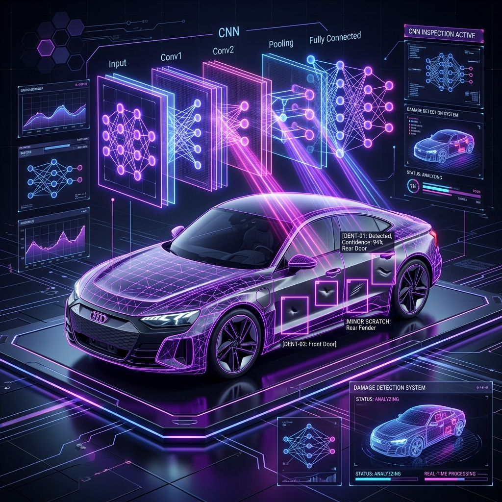

Computer Vision & Deep Learning
How do you accurately diagnose and locate vehicle damage from unconstrained photos?
A deep convolutional neural network (CNN) model engineered to classify damage severity and vehicle body part defects across variable lighting conditions and angles to streamline insurance claims.
